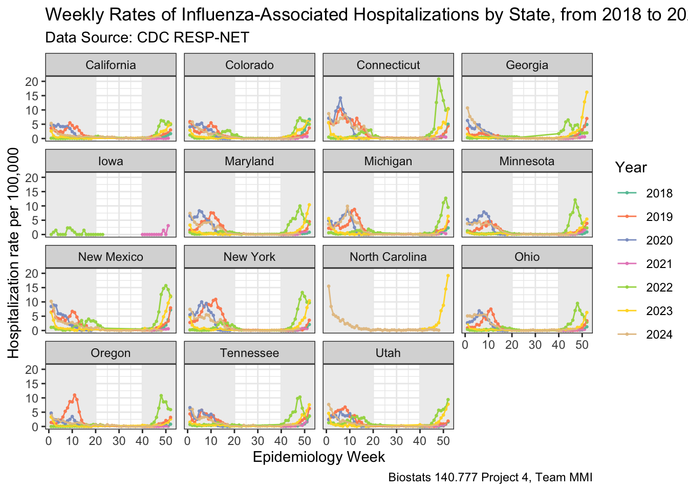
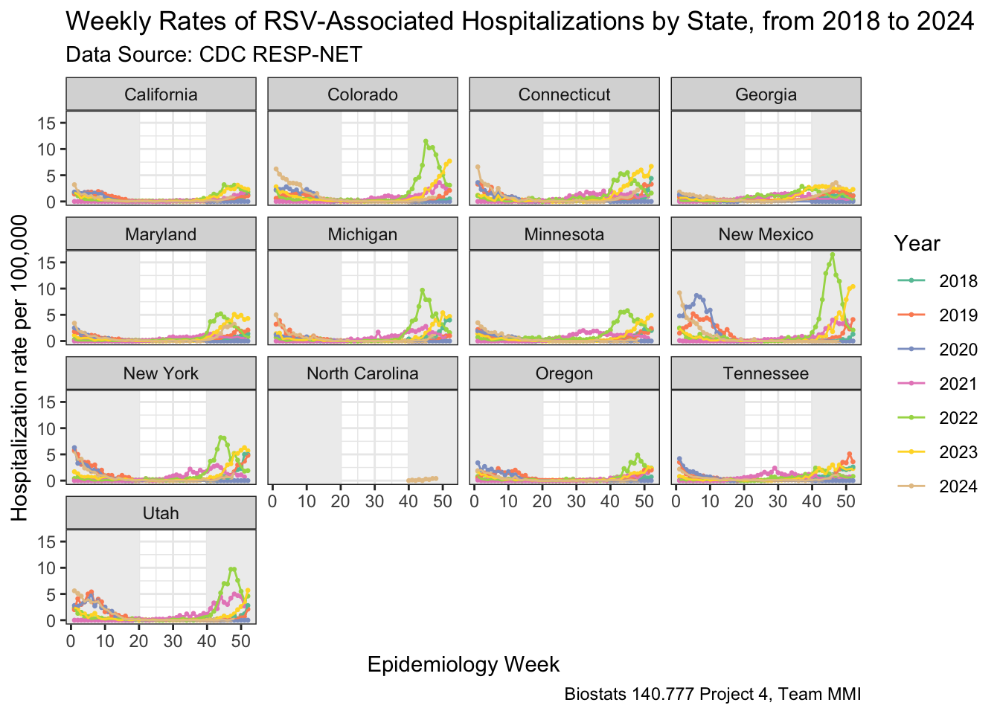

library('here')
library('tidyverse')
library('ggplot2')
theme_set(theme_bw())
library('lubridate')
library('knitr')
library('RSocrata') # a package to read socrata data - which is the way CDC datasets are stored. see CRAN documentation here: https://cran.r-project.org/web/packages/RSocrata/index.html
library('openmeteo') # a package to scrap data from openmeteo API. see CRAN documentation here: https://cran.r-project.org/web/packages/openmeteo/openmeteo.pdf
library('reshape2')
library('shiny')
library('shinydashboard')
library('shinyjs')Weather-Respiratory Diseases Correlation Explorer
JHSPH 140.777 Statistical Programming Final Project.
| Name | Job | JHED | |
|---|---|---|---|
| Juanyu Zhang | Interactive Dashboard | jzhan398 | jzhan398@jh.edu |
| Yunyi Ru | Data Gathering and Wrangling | yru3 | yru3@jh.edu |
Project Overview
We want to investigate the correlation between climate and weather-related conditions and outbreaks of two respiratory viruses, influenza and respiratory syncytial virus (RSV).
Influenza is an RNA virus from the Orthomyxoviridae family that frequently mutates, causing seasonal epidemics, while RSV is an RNA virus from the Paramyxoviridae family that primarily affects young children and the elderly, often leading to severe lower respiratory infections.
Both viruses pose significant public health challenges due to their widespread transmission and potential for severe disease.
Climate and weather conditions can influence the activity and spread of both viruses. Studies have suggested that factors like cold temperatures, low indoor humidity, limited sunlight, and rapid weather changes may increase the risk of outbreaks (Carter-Templeton et al. 2022) (Chong et al. 2022) (Fdez-Arróyabe et al. 2021) (Linssen et al. 2021).
Project Goals
In this project, we plan to integrate weather data and disease incidence data together to perform correlation and regression analysis, and to build an interactive dashboard showing those relationships. If possible, we also want to build a machine learning model to predict potential disease outbreaks based on weather data.
Project
Set Up
Load Data
Disease rate data were scrapped from CDC RESP-NET API.
# extract data
rds_files <- c("RSVdat.RDS",
"fludat.RDS",
"weather.RDS")
# Check whether we have all files
if (any(!file.exists(here("data", rds_files)))) {
# If we don't, then download the data
RSVdat <- read.socrata('https://data.cdc.gov/resource/kvib-3txy.json?surveillance_network=RSV-NET&age_group=Overall&sex=Overall&race_ethnicity=Overall')
fludat <- read.socrata('https://data.cdc.gov/resource/kvib-3txy.json?surveillance_network=FluSurv-NET&age_group=Overall&sex=Overall&race_ethnicity=Overall')
# Then save the data objects to RDS files
saveRDS(RSVdat, file = here("data", "RSVdat.RDS"))
saveRDS(fludat, file = here("data", "fludat.RDS"))
}
# load data
RSVdat <- readRDS(here("data", "RSVdat.RDS"))
fludat <- readRDS(here("data", "fludat.RDS"))
# have a look at the data
kable(head(RSVdat))| surveillance_network | season | mmwr_year | mmwr_week | age_group | sex | race_ethnicity | site | weekly_rate | cumulative_rate | X_weekenddate | type |
|---|---|---|---|---|---|---|---|---|---|---|---|
| RSV-NET | 2022-23 | 2023.0 | 39.0 | Overall | Overall | Overall | Utah | 0.1 | 79.0 | 2023-09-30 00:00:00 | Unadjusted Rate |
| RSV-NET | 2022-23 | 2023.0 | 38.0 | Overall | Overall | Overall | Utah | 0.0 | 79.0 | 2023-09-23 00:00:00 | Unadjusted Rate |
| RSV-NET | 2022-23 | 2023.0 | 37.0 | Overall | Overall | Overall | Utah | 0.1 | 79.0 | 2023-09-16 00:00:00 | Unadjusted Rate |
| RSV-NET | 2022-23 | 2023.0 | 36.0 | Overall | Overall | Overall | Utah | 0.1 | 79.0 | 2023-09-09 00:00:00 | Unadjusted Rate |
| RSV-NET | 2022-23 | 2023.0 | 35.0 | Overall | Overall | Overall | Utah | 0.1 | 79.0 | 2023-09-02 00:00:00 | Unadjusted Rate |
| RSV-NET | 2022-23 | 2023.0 | 34.0 | Overall | Overall | Overall | Utah | 0.0 | 78.0 | 2023-08-26 00:00:00 | Unadjusted Rate |
kable(head(fludat))| surveillance_network | season | mmwr_year | mmwr_week | age_group | sex | race_ethnicity | site | weekly_rate | cumulative_rate | X_weekenddate | type |
|---|---|---|---|---|---|---|---|---|---|---|---|
| FluSurv-NET | 2023-24 | 2024.0 | 39.0 | Overall | Overall | Overall | North Carolina | 0.1 | 121.0 | 2024-09-28 00:00:00 | Unadjusted Rate |
| FluSurv-NET | 2023-24 | 2024.0 | 38.0 | Overall | Overall | Overall | North Carolina | 0.2 | 121.0 | 2024-09-21 00:00:00 | Unadjusted Rate |
| FluSurv-NET | 2023-24 | 2024.0 | 37.0 | Overall | Overall | Overall | North Carolina | 0.2 | 121.0 | 2024-09-14 00:00:00 | Unadjusted Rate |
| FluSurv-NET | 2023-24 | 2024.0 | 36.0 | Overall | Overall | Overall | North Carolina | 0.2 | 121.0 | 2024-09-07 00:00:00 | Unadjusted Rate |
| FluSurv-NET | 2023-24 | 2024.0 | 35.0 | Overall | Overall | Overall | North Carolina | 0.3 | 121.0 | 2024-08-31 00:00:00 | Unadjusted Rate |
| FluSurv-NET | 2023-24 | 2024.0 | 34.0 | Overall | Overall | Overall | North Carolina | 0.1 | 120.0 | 2024-08-24 00:00:00 | Unadjusted Rate |
union(unique(RSVdat$site), unique(fludat$site)) [1] "Utah" "Tennessee" "Oregon" "New York"
[5] "New Mexico" "Minnesota" "Michigan" "Maryland"
[9] "Georgia" "Connecticut" "Colorado" "California"
[13] "Overall" "North Carolina" "Ohio" "Iowa" union(unique(RSVdat$season), unique(fludat$season))[1] "2022-23" "2023-24" "2021-22" "2018-19" "2019-20" "2020-21" "2024-25"As is shown here, the RESP-NET data contains weekly disease incident data from 15 different states (Utah, Tennessee, Oregon, New York, New Mexico, Minnesota, Michigan, Maryland, Georgia, Connecticut, Colorado, California, North Carolina, Ohio, and Iowa - ‘Overall’ should be excluded) and 7 flu seasons (2018 to 2024).
We then need to get weather data for those states in those time periods using the OpenMeteo API. We are using the coordinates for the geographic centers [you should add a ref link here!] for each state here.
# Define the function to fetch weather data and add site information
fetch_weather_data <- function(state, lat, lon) {
weather_data <- weather_history(
c(lat, lon),
start = "2018-01-01",
end = "2024-11-30",
daily = c(
"weather_code",
"temperature_2m_max",
"temperature_2m_min",
"precipitation_sum",
"precipitation_hours",
"sunshine_duration",
"daylight_duration",
"wind_speed_10m_max",
"wind_gusts_10m_max",
"wind_direction_10m_dominant",
"shortwave_radiation_sum",
"et0_fao_evapotranspiration"
)
)
weather_data <- weather_data %>%
mutate(site = state)
}
# check whether we have the file
if (!file.exists(here('data', 'weather.RDS'))) {
# if not, fetch data for each state using openmeteo
wUtah <- fetch_weather_data("Utah", 39.3055, -111.6703)
wTennessee <- fetch_weather_data("Tennessee", 35.858, -86.3505)
wOregon <- fetch_weather_data("Oregon", 43.9336, -120.5583)
wNewYork <- fetch_weather_data("New York", 42.9538, -75.5268)
wNewMexico <- fetch_weather_data("New Mexico", 34.4071, -106.1126)
wMinnesota <- fetch_weather_data("Minnesota", 46.2807, -94.3053)
wMichigan <- fetch_weather_data("Michigan", 44.3467, -85.4102)
wMaryland <- fetch_weather_data("Maryland", 39.0550, -76.7909)
wGeorgia <- fetch_weather_data("Georgia", 32.6415, -83.4426)
wConnecticut <- fetch_weather_data("Connecticut", 41.6219, -72.7273)
wColorado <- fetch_weather_data("Colorado", 38.9972, -105.5478)
wCalifornia <- fetch_weather_data("California", 37.1841, -119.4696)
wNorthCarolina <- fetch_weather_data("North Carolina", 35.5557, -79.3877)
wOhio <- fetch_weather_data("Ohio", 40.2862, -82.7937)
wIowa <- fetch_weather_data("Iowa", 42.0751, -93.4960)
weather <- rbind(wUtah, wTennessee, wOregon, wNewYork, wNewMexico, wMinnesota, wMichigan, wMaryland, wGeorgia, wConnecticut, wColorado, wCalifornia, wNorthCarolina, wOhio, wIowa)
saveRDS(weather, file = here("data", "weather.RDS"))
}
# load data
weather <- readRDS(here("data", "weather.RDS"))
# have a look
kable(head(weather))| date | daily_weather_code | daily_temperature_2m_max | daily_temperature_2m_min | daily_precipitation_sum | daily_precipitation_hours | daily_sunshine_duration | daily_daylight_duration | daily_wind_speed_10m_max | daily_wind_gusts_10m_max | daily_wind_direction_10m_dominant | daily_shortwave_radiation_sum | daily_et0_fao_evapotranspiration | site |
|---|---|---|---|---|---|---|---|---|---|---|---|---|---|
| 2018-01-01 | 3 | 7.4 | -3.9 | 0.0 | 0 | 29058.57 | 34052.62 | 10.9 | 28.8 | 7 | 9.61 | 1.23 | Utah |
| 2018-01-02 | 3 | 5.6 | -4.0 | 0.0 | 0 | 30454.12 | 34095.12 | 10.3 | 25.9 | 348 | 10.43 | 1.20 | Utah |
| 2018-01-03 | 3 | 8.2 | -4.9 | 0.0 | 0 | 30505.15 | 34141.05 | 6.4 | 18.0 | 30 | 9.61 | 1.43 | Utah |
| 2018-01-04 | 3 | 9.6 | -1.5 | 0.0 | 0 | 30560.50 | 34190.65 | 6.5 | 15.5 | 39 | 10.03 | 1.58 | Utah |
| 2018-01-05 | 3 | 10.6 | 0.2 | 0.0 | 0 | 30076.40 | 34244.35 | 9.2 | 19.1 | 47 | 9.68 | 1.68 | Utah |
| 2018-01-06 | 53 | 7.3 | 0.3 | 4.1 | 10 | 0.00 | 34302.04 | 8.4 | 26.6 | 65 | 2.85 | 0.68 | Utah |
Data Wrangling
# Processing weather data
# lubridate
weather <- weather %>%
mutate(date = ymd(date),
week = epiweek(date),
year = year(date),
y_w = paste(year, week, sep = "_"))
# from daily to weekly weather data (all average)
week_weather <- weather %>%
group_by(y_w, site, year, week) %>%
summarise(
temp_max = mean(daily_temperature_2m_max),
temp_min = mean(daily_temperature_2m_min),
precip_sum = mean(daily_precipitation_sum),
precip_hr = mean(daily_precipitation_hours),
sunshine = mean(daily_sunshine_duration),
daylight = mean(daily_daylight_duration),
wind_speed_max = mean(daily_wind_speed_10m_max),
wind_gusts_max = mean(daily_wind_gusts_10m_max),
wind_direction = atan2(mean(sin(daily_wind_direction_10m_dominant * pi / 180)), mean(cos(daily_wind_direction_10m_dominant * pi / 180))) * 180 / pi %% 360,
wind_direction = if_else(wind_direction < 0, wind_direction + 360, wind_direction), # calculate wind direction average
shortwave = mean(daily_shortwave_radiation_sum),
evapo = mean(daily_et0_fao_evapotranspiration)
) %>%
mutate(across(where(is.numeric), ~ round(., 2)), # round
wind_direction_cardinal = case_when(
wind_direction >= 0 & wind_direction < 22.5 ~ "N",
wind_direction >= 22.5 & wind_direction < 45 ~ "NNE",
wind_direction >= 45 & wind_direction < 67.5 ~ "NE",
wind_direction >= 67.5 & wind_direction < 90 ~ "ENE",
wind_direction >= 90 & wind_direction < 112.5 ~ "E",
wind_direction >= 112.5 & wind_direction < 135 ~ "ESE",
wind_direction >= 135 & wind_direction < 157.5 ~ "SE",
wind_direction >= 157.5 & wind_direction < 180 ~ "SSE",
wind_direction >= 180 & wind_direction < 202.5 ~ "S",
wind_direction >= 202.5 & wind_direction < 225 ~ "SSW",
wind_direction >= 225 & wind_direction < 247.5 ~ "SW",
wind_direction >= 247.5 & wind_direction < 270 ~ "WSW",
wind_direction >= 270 & wind_direction < 292.5 ~ "W",
wind_direction >= 292.5 & wind_direction < 315 ~ "WNW",
wind_direction >= 315 & wind_direction < 337.5 ~ "NW",
wind_direction >= 337.5 & wind_direction <= 360 ~ "NNW",
TRUE ~ NA_character_
) # set cardinal for wind data
) %>%
ungroup()`summarise()` has grouped output by 'y_w', 'site', 'year'. You can override
using the `.groups` argument.# Processing flu and RSV data
# rbind
RESPdat <- rbind(fludat, RSVdat)
# check if all overall data
unique(RESPdat$age_group)[1] "Overall"unique(RESPdat$sex)[1] "Overall"unique(RESPdat$race_ethnicity)[1] "Overall"# basic data wrangling, lubridate
RESPdat.clean <- RESPdat %>%
filter(site != 'Overall') %>% # exclude overall data
mutate(date = ymd_hms(X_weekenddate),
mmwr_year = round(as.numeric(mmwr_year, 0)),
mmwr_week = round(as.numeric(mmwr_week, 0)),
year = year(date),
week = epiweek(date),
y_w = paste(mmwr_year, mmwr_week, sep = "_"),
pathogen = ifelse(surveillance_network == "RSV-NET", "RSV", "influenza")
) %>%
select(-mmwr_year, -mmwr_week, -surveillance_network, -season, -age_group, -sex, -race_ethnicity, -X_weekenddate, -type)
# melt to long data
week_weather_melted <- melt(week_weather,
id.vars = c("week", "site", "year"),
measure.vars = c("temp_max", "temp_min", "precip_sum", "precip_hr", "sunshine", "daylight", "wind_speed_max", "wind_gusts_max", "shortwave", "evapo"),
variable.name = "type",
value.name = "value")
# bind RESPdat.clean and week_weather together
RESP_weather <- left_join(RESPdat.clean, week_weather, by = c("y_w", "site", "year", "week"))
RESP_weather <- RESP_weather %>%
drop_na() %>%
mutate(weekly_rate = as.numeric(weekly_rate),
cumulative_rate = as.numeric(cumulative_rate))
# have a look!
kable(head(RESP_weather))| site | weekly_rate | cumulative_rate | date | year | week | y_w | pathogen | temp_max | temp_min | precip_sum | precip_hr | sunshine | daylight | wind_speed_max | wind_gusts_max | wind_direction | shortwave | evapo | wind_direction_cardinal |
|---|---|---|---|---|---|---|---|---|---|---|---|---|---|---|---|---|---|---|---|
| North Carolina | 0.1 | 121 | 2024-09-28 | 2024 | 39 | 2024_39 | influenza | 28.10 | 19.76 | 10.91 | 8.14 | 29093.92 | 43264.00 | 15.84 | 37.39 | 132.70 | 13.96 | 2.86 | ESE |
| North Carolina | 0.2 | 121 | 2024-09-21 | 2024 | 38 | 2024_38 | influenza | 26.04 | 18.20 | 9.51 | 7.71 | 30440.10 | 44200.58 | 16.71 | 37.97 | 39.50 | 15.00 | 2.91 | NNE |
| North Carolina | 0.2 | 121 | 2024-09-14 | 2024 | 37 | 2024_37 | influenza | 26.29 | 15.83 | 1.97 | 2.57 | 33986.51 | 45131.54 | 13.64 | 30.84 | 68.38 | 19.13 | 3.86 | ENE |
| North Carolina | 0.2 | 121 | 2024-09-07 | 2024 | 36 | 2024_36 | influenza | 27.91 | 17.89 | 7.83 | 4.00 | 36183.91 | 46042.66 | 13.17 | 32.21 | 19.42 | 19.69 | 4.12 | N |
| North Carolina | 0.3 | 121 | 2024-08-31 | 2024 | 35 | 2024_35 | influenza | 32.69 | 18.96 | 1.59 | 0.43 | 40573.59 | 46946.33 | 11.03 | 24.49 | 148.88 | 21.74 | 4.60 | SE |
| North Carolina | 0.1 | 120 | 2024-08-24 | 2024 | 34 | 2024_34 | influenza | 28.01 | 16.70 | 1.13 | 0.86 | 43876.01 | 47820.40 | 11.17 | 28.91 | 31.24 | 23.51 | 4.63 | NNE |
# save data
saveRDS(RESP_weather, file = here("data", "RESP_weather.RDS"))Data Visualization
# basic respiratory virus data visualization
# influenza
RESP_weather_flu <- RESP_weather %>%
filter(pathogen == "influenza")
ggplot(RESP_weather_flu, aes(x = week, y = weekly_rate, color = as.character(year))) +
geom_rect(aes(xmin = -Inf, xmax = 20, ymin = -Inf, ymax = Inf), inherit.aes = FALSE, fill = "#eeeeee", alpha = 1) +
geom_rect(aes(xmin = 40, xmax = Inf, ymin = -Inf, ymax = Inf), inherit.aes = FALSE, fill = "#eeeeee", alpha = 1) +
facet_wrap(~site) +
geom_point(size = 0.5) +
geom_line() +
scale_color_brewer(palette = 'Set2') +
labs(
title = 'Weekly Rates of Influenza-Associated Hospitalizations by State, from 2018 to 2024',
subtitle = 'Data Source: CDC RESP-NET',
caption = 'Biostats 140.777 Project 4, Team MMI',
y = 'Hospitalization rate per 100,000',
x = 'Epidemiology Week',
color = 'Year'
)Warning in geom_rect(aes(xmin = -Inf, xmax = 20, ymin = -Inf, ymax = Inf), : All aesthetics have length 1, but the data has 2553 rows.
ℹ Please consider using `annotate()` or provide this layer with data containing
a single row.Warning in geom_rect(aes(xmin = 40, xmax = Inf, ymin = -Inf, ymax = Inf), : All aesthetics have length 1, but the data has 2553 rows.
ℹ Please consider using `annotate()` or provide this layer with data containing
a single row.
# rsv
RESP_weather_RSV <- RESP_weather %>%
filter(pathogen == "RSV")
ggplot(RESP_weather_RSV, aes(x = week, y = weekly_rate, color = as.character(year))) +
geom_rect(aes(xmin = -Inf, xmax = 20, ymin = -Inf, ymax = Inf), inherit.aes = FALSE, fill = "#eeeeee", alpha = 1) +
geom_rect(aes(xmin = 40, xmax = Inf, ymin = -Inf, ymax = Inf), inherit.aes = FALSE, fill = "#eeeeee", alpha = 1) +
facet_wrap(~site) +
geom_point(size = 0.5) +
geom_line() +
scale_color_brewer(palette = 'Set2') +
labs(
title = 'Weekly Rates of RSV-Associated Hospitalizations by State, from 2018 to 2024',
subtitle = 'Data Source: CDC RESP-NET',
caption = 'Biostats 140.777 Project 4, Team MMI',
y = 'Hospitalization rate per 100,000',
x = 'Epidemiology Week',
color = 'Year'
)Warning in geom_rect(aes(xmin = -Inf, xmax = 20, ymin = -Inf, ymax = Inf), : All aesthetics have length 1, but the data has 3345 rows.
ℹ Please consider using `annotate()` or provide this layer with data containing
a single row.Warning in geom_rect(aes(xmin = 40, xmax = Inf, ymin = -Inf, ymax = Inf), : All aesthetics have length 1, but the data has 3345 rows.
ℹ Please consider using `annotate()` or provide this layer with data containing
a single row.
library(shiny)
library(shinydashboard)
# UI
ui <- dashboardPage(
dashboardHeader(title = "Weekly Rates"),
dashboardSidebar(
selectInput("state", "Select State:",
choices = unique(RESP_weather$site),
selected = unique(RESP_weather$site)[1]),
selectInput("year", "Select Year:",
choices = unique(RESP_weather$year),
selected = unique(RESP_weather$year)[1],
multiple = TRUE),
selectInput("pathogen", "Select Pathogen:",
choices = unique(RESP_weather$pathogen),
selected = unique(RESP_weather$pathogen)[1],
multiple = TRUE)
),
dashboardBody(
fluidRow(
box(title = "Weekly Rates of Repiratory Virus Infection-Associated Hospitalizations",
width = 12,
plotOutput("rsvPlot", height = "600px"))
)
)
)
# Server
server <- function(input, output, session) {
filtered_data <- reactive({
RESP_weather %>%
filter(site == input$state, year %in% input$year, pathogen %in% input$pathogen)
})
output$rsvPlot <- renderPlot({
ggplot(filtered_data(), aes(x = week, y = weekly_rate, color = as.character(year), shape = pathogen, linetype = pathogen)) +
geom_rect(aes(xmin = -Inf, xmax = 20, ymin = -Inf, ymax = Inf),
inherit.aes = FALSE, fill = "#eeeeee", alpha = 1) +
geom_rect(aes(xmin = 40, xmax = Inf, ymin = -Inf, ymax = Inf),
inherit.aes = FALSE, fill = "#eeeeee", alpha = 1) +
facet_wrap(~site) +
geom_point() +
geom_line() +
scale_color_brewer(palette = 'Set2') +
labs(
subtitle = 'Data Source: CDC RESP-NET',
caption = 'Biostats 140.777 Project 4, Team MMI',
y = 'Hospitalization rate per 100,000',
x = 'Epidemiology Week',
color = 'Year'
) +
theme_minimal()
})
}
# Run the app
shinyApp(ui, server)Shiny applications not supported in static R Markdown documents
Dashboard
library(shiny)
library(shinydashboard)
library(ggplot2)
library(dplyr)
weather_labels <- c(
"temp_max" = "Maximum Temperature",
"temp_min" = "Minimum Temperature",
"precip_sum" = "Precipitation",
"sunshine" = "Sunshine",
"daylight" = "Daylight",
"wind_speed_max" = "Maximum Wind Speed"
)
ui <- dashboardPage(
dashboardHeader(title = "Pathogen & Weather Relationship Explorer"),
dashboardSidebar(
selectInput("state", "Select State", choices = unique(RESP_weather$site), selected = "California"),
selectInput("pathogen", "Select Pathogen", choices = unique(RESP_weather$pathogen), selected = "RSV"),
sliderInput("year_range", "Select Year Range", min = min(RESP_weather$year), max = max(RESP_weather$year), value = c(2018, 2024)),
selectInput("weather_var", "Select Weather Variable", choices = c("Maximun Temperature" = "temp_max", "Minimun Temperature" = "temp_min", "Precipitation" = "precip_sum", "Sunshine" = "sunshine", "Daylight" = "daylight", "Maximun Wind Speed" = "wind_speed_max"), selected = "temp_max"),
checkboxInput("show_trend", "Show Trend Line", value = TRUE)
),
dashboardBody(
plotOutput("scatter_plot")
)
)
server <- function(input, output) {
filtered_data <- reactive({
RESP_weather %>%
filter(
site == input$state,
pathogen == input$pathogen,
year >= input$year_range[1],
year <= input$year_range[2],
!is.na(get(input$weather_var)), # Use get() to refer to dynamic column names
!is.na(weekly_rate)
)
})
output$scatter_plot <- renderPlot({
data <- filtered_data()
if (nrow(data) == 0) {
return(NULL)
}
model <- lm(weekly_rate ~ get(input$weather_var), data = data) # Use get() for dynamic column name
r_squared <- summary(model)$r.squared
p <- ggplot(data, aes(x = get(input$weather_var), y = weekly_rate)) +
geom_point(alpha = 0.7, color = "#3498db", size = 3) +
labs(
x = weather_labels[input$weather_var],
y = "Weekly Rate",
title = paste("Relationship Between", input$pathogen, "with", weather_labels[input$weather_var], "in", input$state)
) +
theme_minimal(base_size = 15) +
theme(
plot.title = element_text(hjust = 0.5, size = 18, color = "#2c3e50"),
axis.title = element_text(size = 14, color = "#2c3e50"),
axis.text = element_text(size = 12),
panel.grid.major = element_line(color = "#ecf0f1", size = 0.5),
panel.grid.minor = element_line(color = "#bdc3c7", size = 0.25)
)
if (input$show_trend) {
p <- p + geom_smooth(method = "lm", color = "#e74c3c", size = 1)
}
p + annotate(
"text", x = 0.8 * max(data[[input$weather_var]], na.rm = TRUE),
y = 0.9 * max(data$weekly_rate, na.rm = TRUE),
label = paste("R² =", round(r_squared, 2)),
color = "#2c3e50", size = 5
)
})
}
shinyApp(ui, server)Shiny applications not supported in static R Markdown documents
Machine Learning
Carter-Templeton, Heather, Gary F. Templeton, Leslie H. Nicoll, Latrice Maxie, Theresa S. Kittle, Susan A. Jasko, Eric E. Carpenter, and Karen A. Monsen. 2022. “Associations Between Weather-Related Data and Influenza Reports: A Pilot Study and Related Policy Implications.” Applied Nursing Research: ANR 67 (October): 151413. https://doi.org/10.1016/j.apnr.2021.151413.
Chong, Ka Chun, Yu Chen, Emily Ying Yang Chan, Steven Yuk Fai Lau, Holly Ching Yu Lam, Pin Wang, William Bernard Goggins, et al. 2022. “Association of Weather, Air Pollutants, and Seasonal Influenza with Chronic Obstructive Pulmonary Disease Hospitalization Risks.” Environmental Pollution (Barking, Essex: 1987) 293 (January): 118480. https://doi.org/10.1016/j.envpol.2021.118480.
Fdez-Arróyabe, Pablo, Alberto Marti-Ezpeleta, Dominic Royé, and Ana Santurtún Zarrabeitia. 2021. “Effects of Circulation Weather Types on Influenza Hospital Admissions in Spain.” International Journal of Biometeorology 65 (8): 1325–37. https://doi.org/10.1007/s00484-021-02107-y.
Linssen, Rosalie S., Bibiche den Hollander, Louis Bont, Job B. M. van Woensel, Reinout A. Bem, and null On Behalf Of The Pice Study Group. 2021. “The Association Between Weather Conditions and Admissions to the Paediatric Intensive Care Unit for Respiratory Syncytial Virus Bronchiolitis.” Pathogens (Basel, Switzerland) 10 (5): 567. https://doi.org/10.3390/pathogens10050567.